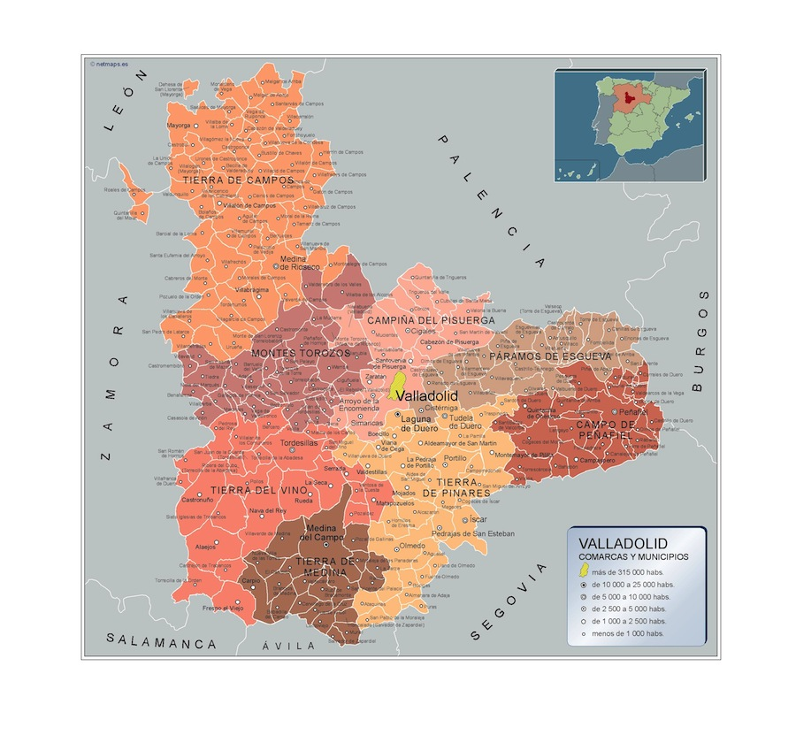
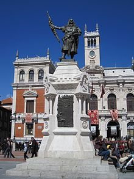
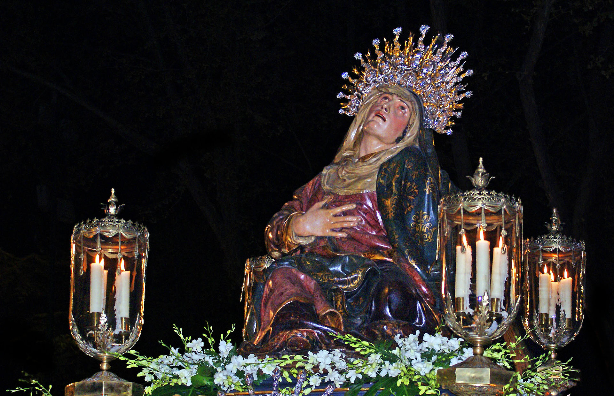
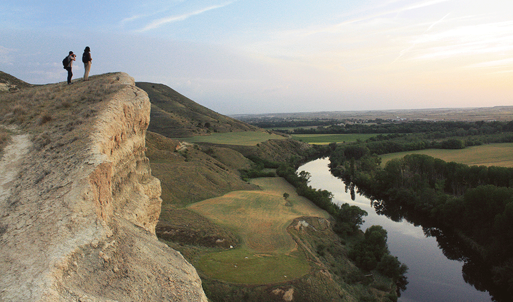
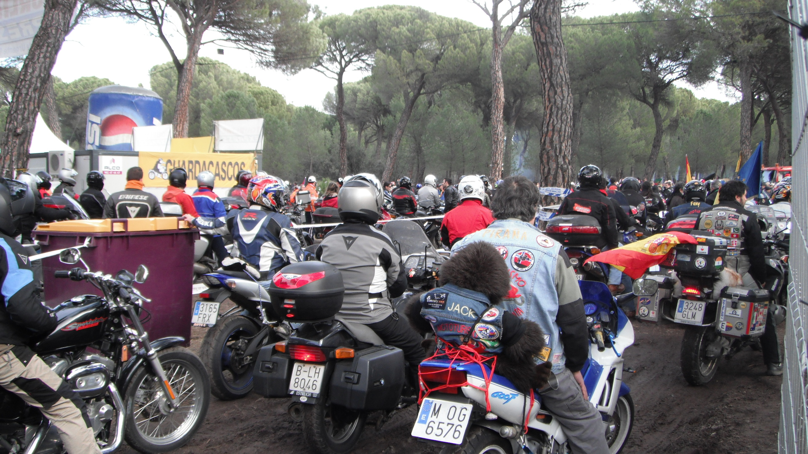
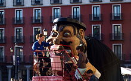
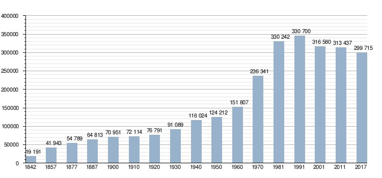

Ir a Zamora
Ir a Salamanca
Ir a leon
Ir a Palencia
Ir a Burgos
Ir a Soria
Ir a Segovia
Ir a Ávila
LOCALIZACIÓN
La ciudad de Valladolid se encuentra en la mitad norte de la península ibérica. Está situada en el centro de la Meseta Norte, división de la Meseta Central, por lo que presenta un paisaje típico, llano y con escasa vegetación. El relieve vallisoletano lo conforma una llanura interrumpida por pequeñas series de colinas que originan un paisaje montañoso de cerros testigos como el de San Cristóbal (843 m), a pocos kilómetros de la capital. Las coordenadas de la ciudad son 41º 38' N 4º 43' O. La altitud del centro de la ciudad es de 690 m s. n. m., mientras que la altitud máxima del municipio es de 863 m s. n. m., la cual se da al noreste del mismo, entre Páramo de Cabezón y Barco de San Pedro; y la altitud mínima es de 671 m s. n. m., la cual se da en el último tramo del río Duero dentro del municipio, a unos metros de su confluencia con el río Pisuerga.
VOLVER ARRIBA
LOCALIDADES PRINCIPALES
A cotinuación se muestra un mapa interactivo de la provincia de Valladolid. Si clicamos en los nombres nos redirigira a la web oficial de cada zona 
VOLVER ARRIBA
GEOGRAFÍA
El término municipal cuenta con dos exclaves, uno al norte de Villanubla (Navabuena) y otro al oeste de Ciguñuela (El Rebollar).
Su céntrica situación en la Meseta Norte le hace estar casi equidistante del resto de las ciudades castellanas. Palencia está a 50 kilómetros, Zamora a 104 kilómetros, Segovia a 117 kilómetros, Salamanca a 121 kilómetros, Burgos a 127 kilómetros, Ávila a 138 kilómetros, León a 139 kilómetros y Soria a 208 kilómetros.
PICO MÁS ALTO
El Pico Cuchillejo es el pico más alto de la provincia de Valladolid, alcanzando los 932 metros de altura, siendo por tanto el pico más alto de la Ribera del Duero vallisoletana.
Se encuentra dentro del término municipal ribereño de Castrillo de Duero, a solo 200 metros del límite con la provincia de Segovia.

source:https://www.rutadelvinoriberadelduero.es/es/recurso-natural/pico-cuchillejo
VOLVER ARRIBA
HISTORIA
Hay indicios datables en el Paleolítico Inferior, esencialmente Achelense, recogido en superficie en las terrazas cuaternarias del río Pisuerga, en Canterac (que actualmente es un gran parque situado a las afueras); pero no se puede decir que la ciudad tuviera una ocupación estable hasta la Edad Media, que es posiblemente cuando surgió el topónimo que le da nombre. Los asentamientos posteriores en la actual provincia de Valladolid datan de épocas prerromanas, existiendo en la zona yacimientos de pueblos vacceos, que fueron pobladores de cultura muy avanzada, y, como el resto de pueblos célticos, llegaron a la península procedentes del norte de Europa. El máximo exponente de esta cultura en las cercanías, que fue arrasada por los romanos, es Pincia (Pintia), en la actual localidad de Padilla de Duero.
Monumento al conde Pedro Ansúrez, uno de los nobles más cercanos a Alfonso VI, que fue primer señor de Valladolid
Siglo XXI
Como ciudad significativa en la evolución de la lengua castellana, se celebró entre el 16 y el 19 de octubre de 2001, en el Teatro Calderón, el II Congreso Internacional de la Lengua Española, foro de reflexión sobre el idioma español, presidido por los reyes de España.
Valladolid fue premiada por la asociación internacional LUCI en 2011 con el Premio al Mejor Proyecto de Iluminación Urbana City People Light por la "Ruta Ríos de Luz" y en 2012 con el Premio del Jurado Popular al Mejor Proyecto de Iluminación Urbana de los Premios City People Light Awards. En 2012 Unicef declara a Valladolid Ciudad Amiga de la Infancia. En abril de 2013, Valladolid fue premiada con el Premio Reina Sofía de Accesibilidad de Municipios Españoles por su esfuerzo en la integración, normalización y participación activa de toda la ciudadanía sea cual sea su capacidad funcional.
Si estás más interesado en el tema el agregamos un documental sobre la historias de Valladolid. Pinche aquí para verlo
VOLVER ARRIBA
CULTURA
Semana Santa
La Semana Santa es el evento cultural más importante de la ciudad, debido a sus valiosas tallas policromadas de los siglos xvi y xvii de Juan de Juni, Gregorio Fernández o Francisco del Rincón, muchas de ellas expuestas durante el resto del año en el Museo Nacional de Escultura, atrayendo anualmente a visitantes de toda España y el resto del mundo.
Esta celebración fue declarada de Interés Turístico Internacional en 1980, siendo de esta manera la primera celebración de la Semana Santa en España en ostentar dicha declaración. En 2014 se iniciaron los trámites para conseguir su reconocimiento como patrimonio cultural inmaterial de la Humanidad.
source:https://es.wikipedia.org/wiki/Valladolid#/media/Archivo
.jpg){kind=link}
VOLVER ARRIBA
NATURALEZA
La provincia de Valladolid cuenta con Espacios Naturales que se distinguen por su valor natural, ya que están amparados y protegidos por la legislación autonómica y europea en base a su diversidad y calidad medioambiental. Sobresale la Reserva Natural de las Riberas de Castronuño-Vega del Duero, ubicada en la zona sur de la provincia, un paraíso para los amantes de la naturaleza en todo su esplendor...

VOLVER ARRIBA
TRADICIONES
A lo largo del año se celebran numerosos eventos culturales en la ciudad. Cronológicamente, el primer fin de semana después de la festividad de Reyes se celebra la concentración motorista invernal Pingüinos, la más numerosa de Europa, en la que se realizan todo tipo de actividades relacionadas con el mundo de las dos ruedas.
En primavera tenía también lugar el afamado e internacionalmente consolidado festival de música Valladolid Latino en el que desde 2006 y hasta 2015 han intervenido artistas como Alejandro Sanz, Juanes, Paulina Rubio, Julieta Venegas o Marc Anthony entre otros muchos.
Desde 1946 los gigantes muñecones de El Tío Tragaldabas y La Tía Melitona han engullido a miles de niños vallisoletanos durante las Ferias y Fiestas de la Virgen de San Lorenzo celebradas durante el mes de septiembre.
VOLVER ARRIBA
OTROS ASPECTOS
A lo largo de los tres primeros tercios del siglo xx, Valladolid experimentó un importante aumento de población, gracias al éxodo rural. Este crecimiento, lento durante las dos primeras décadas e interrumpido por la Guerra Civil, fue especialmente significativo desde los años sesenta, con la llegada de mano de obra foránea, y supuso el momento de mayor crecimiento demográfico en la historia de la capital. Sin embargo, a partir de los años ochenta se produjo un giro en esta tendencia, que supuso un estancamiento en el crecimiento de la población, debido a dos motivos: al cese de los flujos migratorios que habían impulsado el crecimiento en épocas pasadas y a un descenso brusco en la tasa de natalidad.
source:https://es.wikipedia.org/wiki/Valladolid
VOLVER ARRIBA